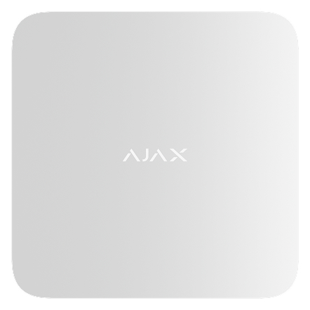
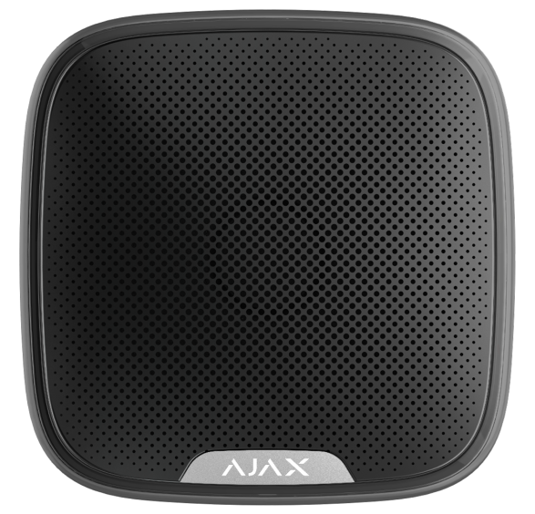

Professionnels
Votre activité, protégée.
Commerces, bureaux, entrepôts et plusieurs sites. Étude, installation et suivi par un partenaire agréé Ajax Systems, sur toute l’île.

Cas d’usage
Des sites très différents, une même exigence.
Commerces & retail
Ouvertures, volumes, abords, sirènes, vidéo pour lever le doute.
Bureaux
Multi-zones, horaires, utilisateurs multiples, scénarios d’armement.
Entrepôts & locaux techniques
Périmètres, portées radio, extensions de couverture.
Restaurants & CHR
Protection hors service, alertes, automatismes utiles au quotidien.
Plusieurs sites
Un interlocuteur unique sur toute l’île, pour chaque adresse.
Incendie
Détecteurs de fumée, de chaleur et de monoxyde de carbone, étudiés selon votre site.

Superior
Quand Superior a du sens.
Sites multi-zones, exigences élevées, complément filaire : la ligne Superior s’adresse aux projets ambitieux.
Sélection Superior
Le matériel des projets exigeants.

Superior Hub Hybrid 2
Centrales
- 8lignes pour connecter des dispositifs Ajax Superior filaires
- Jusqu'à 200dispositifs sur une seule ligne pour un câblage économique
- Jusqu'à 60 heuresde fonctionnement autonome avec une batterie de secours de 12 V⎓, 7 Ah
Source : Ajax Systems
Sur devisVoir la fiche


Superior MotionCam (PhOD) Jeweller
Détecteurs de mouvements
- 9 secondespour recevoir la première photo 1
Source : Ajax Systems
Sur devisVoir la fiche


Superior HomeSiren G3 Jeweller
Sirènes
- 85 à 105 dBRéglage du volume des signaux pour les alarmes et autres événements
Source : Ajax Systems
Sur devisVoir la fiche
Superior · vidéo
La ligne vidéo des sites exigeants.
Comme la ligne Baseline, les caméras Superior reconnaissent les personnes, les véhicules et les animaux, et peuvent déclencher l’alarme. Superior y ajoute une IA enrichie, des optiques P-Iris 2,8–12 mm, un haut-parleur, et les enregistreurs Superior NVR H2D.
Après la pose
Un suivi dans la durée. Maintenance selon le contrat défini ensemble.
Parlons de votre site.
Étude professionnelle sur place, sur toute l’île.
L’étude se fait chez vous, avant le devis.
Nous venons voir les accès, les volumes et la radio réelle. Le devis ne décrit que ce que le lieu demande.
En savoir plus
L’analyse porte sur les risques et les accès, pas sur une liste d’appareils à placer partout. Deux maisons voisines ne donnent pas le même chantier. Des photos peuvent préparer la visite. Elles ne remplacent pas un test radio.
 1
1Étude
Nous venons voir le lieu.
 2
2Devis
Le prix est dans le devis.

3Installation
Pose et essais chez vous.
 4
4Mise en service
Vous armez depuis l’application.
 5
5SAV
Nous restons joignables.
La pose, le réglage, puis nous restons joignables.
Nous posons, nous testons, puis nous vous montrons comment armer, lire une alerte et repérer une pile faible.
En savoir plus
Les liaisons filaires et l’alimentation suivent le plan de l’étude. Les utilisateurs et les scénarios sont réglés avec vous. Le dépannage suit ce qui est écrit au devis. La télésurveillance, si vous la souhaitez, se discute à part. Elle n’est pas un service déjà ouvert.
- 1
Étude
Nous venons voir le lieu.
- 2
Devis
Le prix est dans le devis.
- 3
Installation
Pose et essais chez vous.
- 4
Mise en service
Vous armez depuis l’application.
- 5
SAV
Nous restons joignables.
Pourquoi choisir Active Sécurité 974.
Nous venons, nous chiffrons le système installé, puis nous le posons. Pas de classement, pas de nombre de clients, pas d’avis inventé.
En savoir plus
Un kit vous laisse le plan et les tests. Un installateur multimarque couvre plusieurs catalogues. Certaines offres lient le matériel à un abonnement. Ici, le devis porte d’abord sur l’installation. La télésurveillance, si vous la voulez, se discute à part et n’est pas un service déjà ouvert.
- –Kit à monterLe plan et les tests restent chez vous.
- –MultimarquePlusieurs catalogues, plusieurs logiques.
- –Abonnement liéLe matériel est parfois lié à un contrat.
- ✓AS974Étude, devis, pose, puis le SAV.